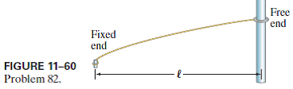

A string can have a “free” end if that end is attached to a ring that can slide without friction on a vertical pole (Fig. 11–60). Determine the wavelengths of the resonant vibrations of such a string with one end fixed and the other free.
